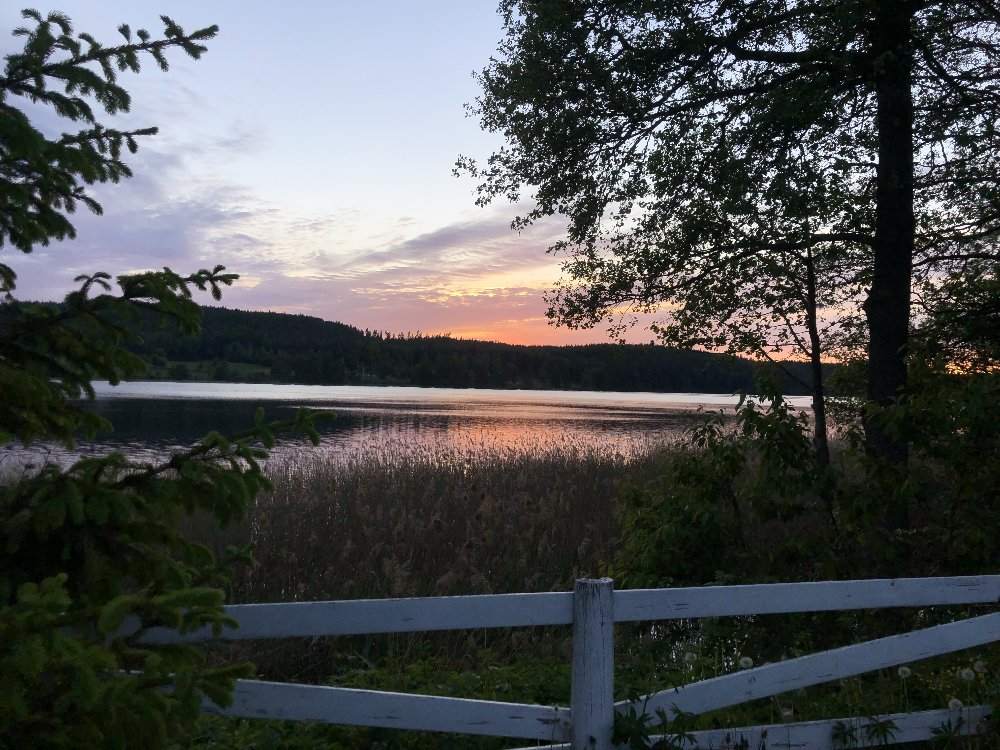
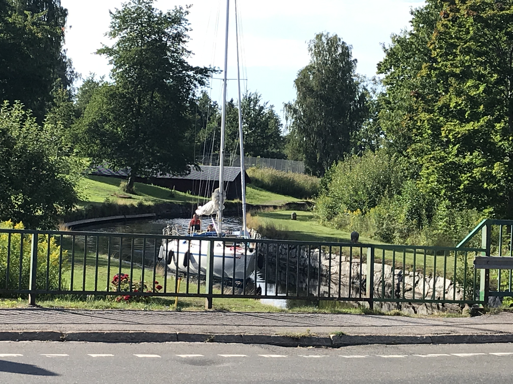
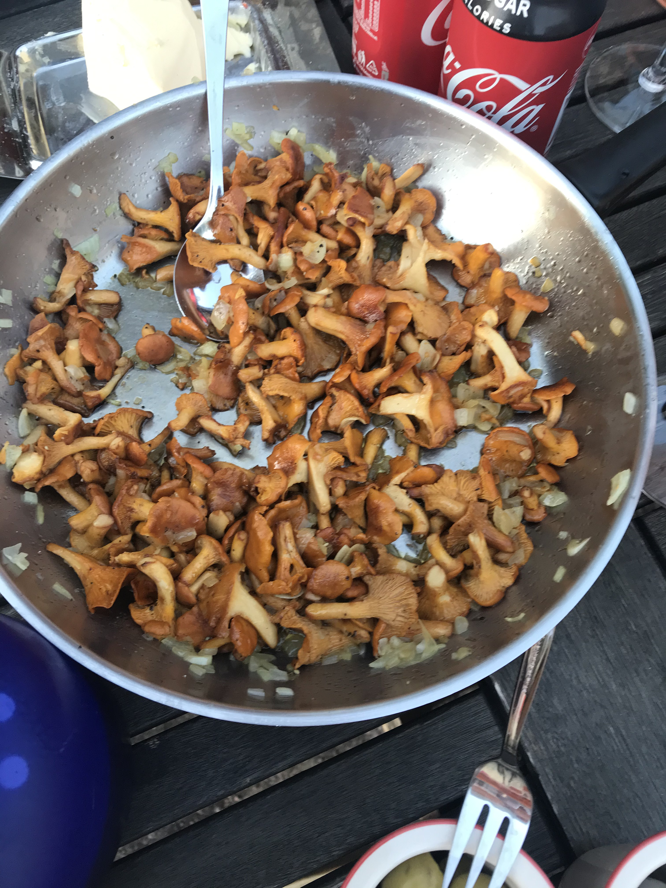
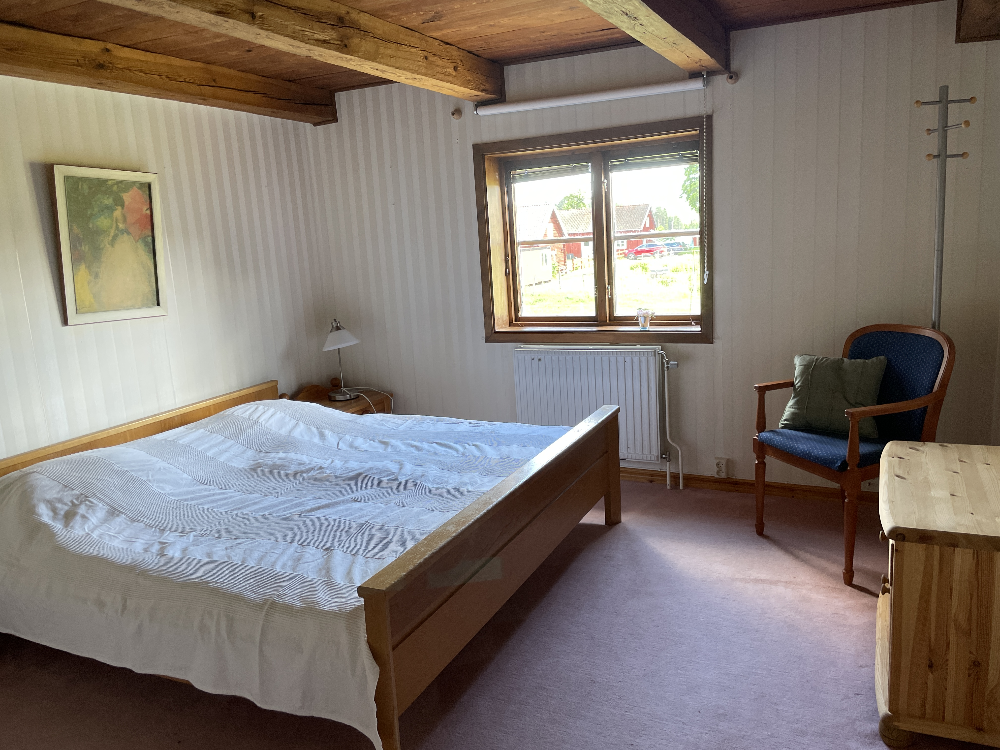
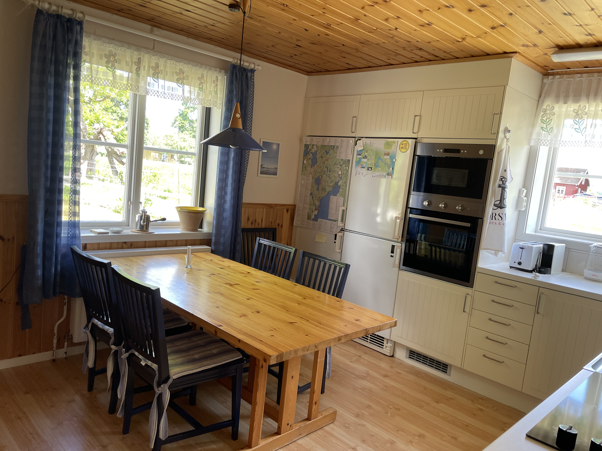

Über das Ferienhaus
Unser Ferienhaus liegt im süden mittig in Schweden in der Nähe vom Vattern See, dem zweite größten See Schweden und hat einen großen garten und liegt direkt an einem See mit nur einem Bauernhof als Nachbar.
Bilder




Umgebung & Aktivitäten
Tipps & Guides
Places to be

Rund ums Haus gibt es einiges zu entdecken. Unsere Highlights in der Nähe:
Forsvik
Der Götakanal mit seiner ältesten und höchsten Schleuse – besonders schön wenn Schiffe passieren. Das Forsvik Industrieminne ist ein absolutes Must-See. Und das kleine Café direkt am Kanal lädt zum Verweilen ein – aber Achtung: schließt oft schon um 16 Uhr!
Karlsborg
Festung, Wanderwege und der Skepshandel mit kleiner aber feiner Segler-Ausstattung.
Hjo
Die Trästaden am Vättern – eine extrem liebenswerte Stadt mit echter Urlaubsatmosphäre. Fischbrötchen am Hafen, die größte Eisauswahl ever und der wunderschöne Stadsparken direkt am See.
Tivedens Nationalpark
Das absolute Highlight zum Wandern. Unberührte, urige Natur mit riesigen Granitfelsen aus der Eiszeit. Gutes Schuhwerk ist Pflicht – und ohne Wanderkarte bitte nicht aufbrechen!
Dining & Dagens Lunch

Restaurants auf dem schwedischen Land haben oft eigenwillige Öffnungszeiten – am besten vorher online checken. Viele akzeptieren keine Barzahlung mehr, nur Karte oder SWISH.
Dagens Lunch – eine der besten schwedischen Erfindungen
Mo–Fr zur Mittagszeit: Vorspeise oder Salatbuffet, Hauptgang und Kaffee mit Kuchen – alles zwischen 95 und 150 SEK. Einfach beim Reinkommen bezahlen, Tisch suchen, genießen.
Unsere Empfehlungen
Rödesund Hotellet (Karlsborg) – stilvoll, ambitionierte Küche, super Service. Unsere Top-Adresse.
Stampens Kvarn (Hjo) – junges Team, tolles Salatbuffet, selbstgebackenes Brot, oft Fischgericht.
Sveas Trädgård (Hjo) – direkt am Stadsparken, junges Team, sehr angenehme Atmosphäre.
Mölltorps Grillen – die sichere Bank für Pizza und Kebap in der Nähe.
Typisch Schwedisch – Mitbringsel
Wer den Lieben daheim etwas Echtes mitbringen möchte – hier ein paar Ideen abseits vom Elch-Souvenir:
- Solstickan – schwedische Streichhölzer in den strahlend blauen Schachteln. Im ICA erhältlich.
- Mora Kniv – das schwedische Gebrauchsmesser schlechthin. Praktisch, günstig, top Qualität. Bei Byggvaror in Karlsborg.
- Leksands Knäckebrot – Havsalt och Frön ist unser Favorit. In jedem gut sortierten ICA.
- Äxte von Gränsfors Bruk – handgeschmiedet, ein echtes Once-in-a-lifetime Geschenk.
Radio im Schwedenurlaub
Schwedisch klingt – laut einem Bekannten – wie Mandarin-Platt mit starkem portugiesischem Akzent. Dem würden wir uns nicht uneingeschränkt anschließen, aber verstehen tut man erstmal nichts.
P3 SR – kulturell vielfältig, ab spätem Nachmittag meist göttlich. Vormittags leider sehr Talk-lastig.
RIX FM – beinhart die aktuellen Chart-Hits. Immer. Auf dem Rückweg vom ICA läuft schon wieder Ava Max.
Star FM – gnadenlos nur 70er, 80er und 90er. Bildungsauftrag mit archäologischem Charakter.
Für weitere Tipps
Schwedisch klingt – laut einem Bekannten – wie Mandarin-Platt mit starkem portugiesischem Akzent. Dem würden wir uns nicht uneingeschränkt anschließen, aber verstehen tut man erstmal nichts.
P3 SR – kulturell vielfältig, ab spätem Nachmittag meist göttlich. Vormittags leider sehr Talk-lastig.
RIX FM – beinhart die aktuellen Chart-Hits. Immer. Auf dem Rückweg vom ICA läuft schon wieder Ava Max.
Star FM – gnadenlos nur 70er, 80er und 90er. Bildungsauftrag mit archäologischem Charakter.
Bilder Innen







Kontakt
Email: -
Telefon: -